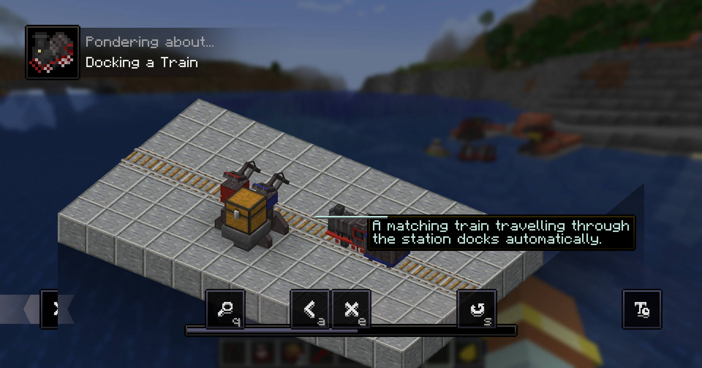
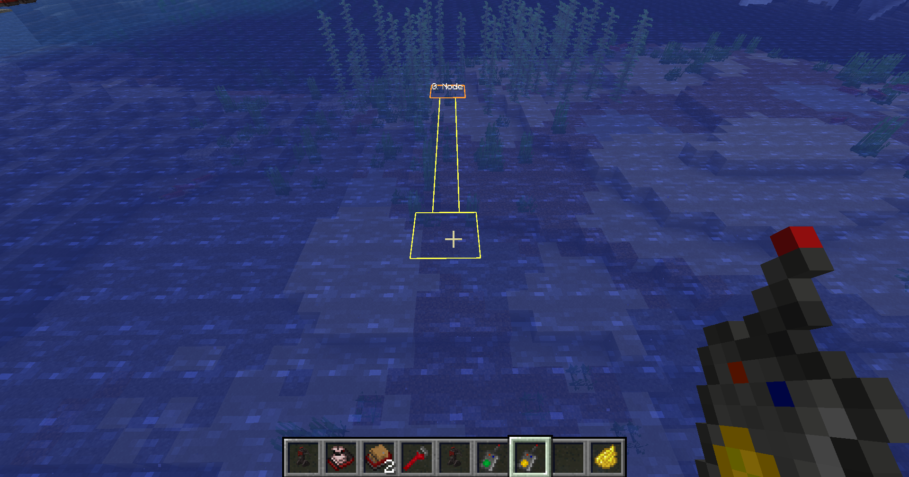
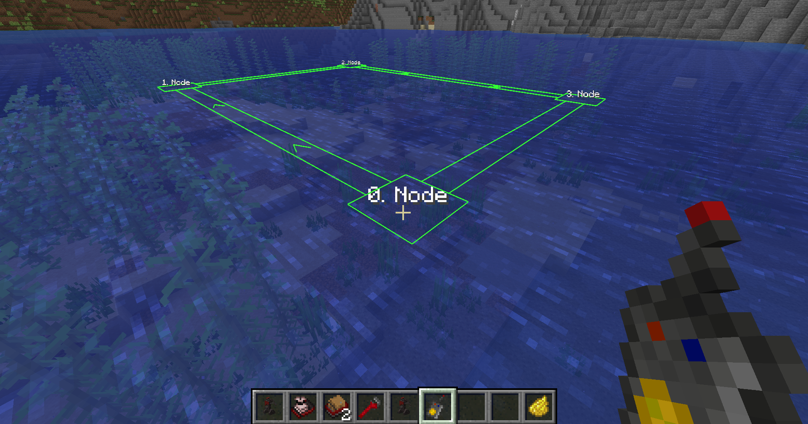
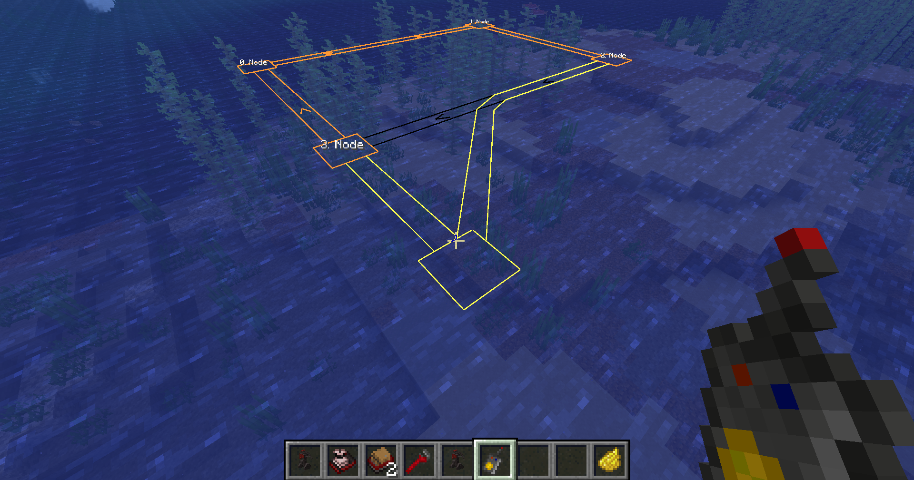
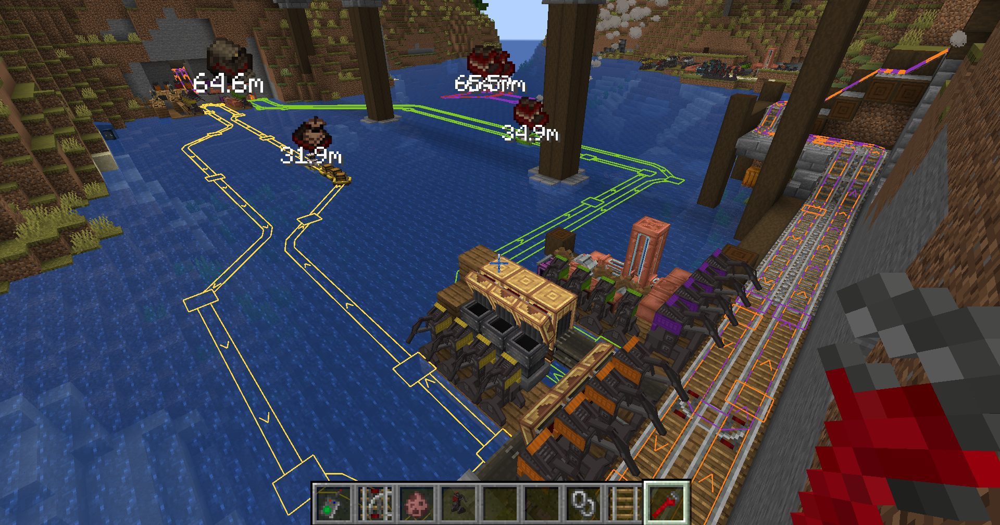
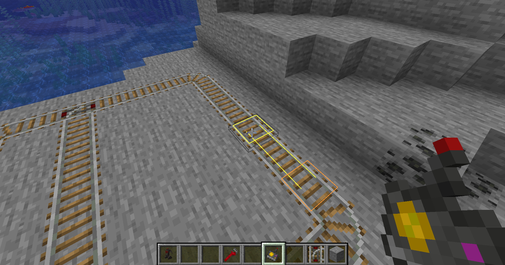
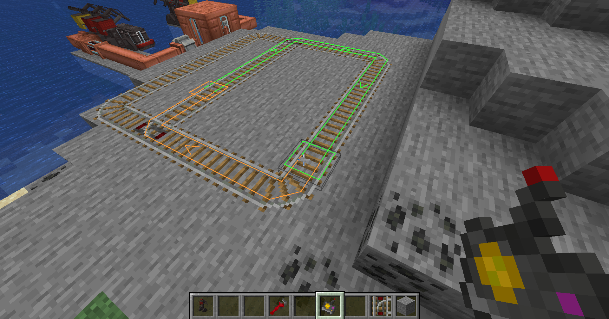
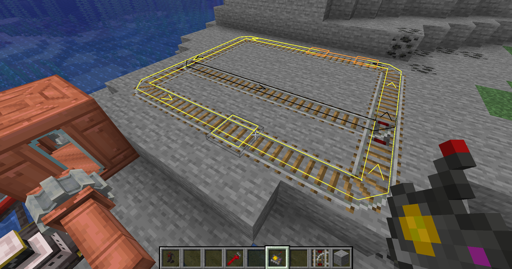
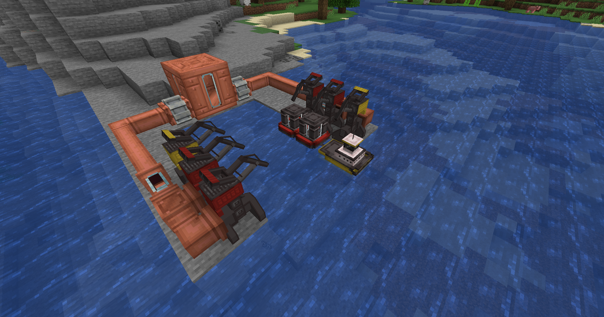
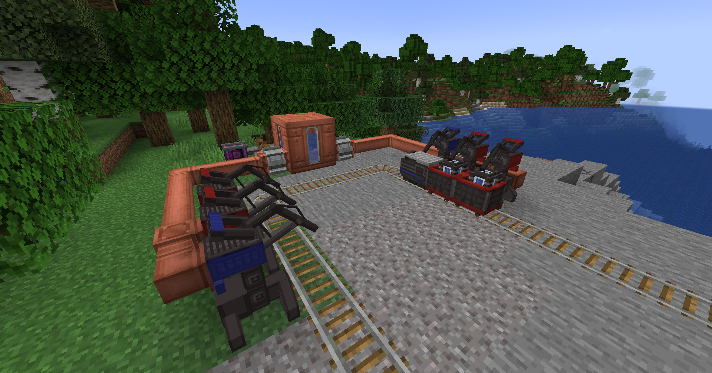

Getting started
Little Logistics has two parallel transport systems:
- Water convoys use a tug followed by barges.
- Trains use a locomotive followed by train cars.
Both systems follow the same basic workflow:
- Place a tug or locomotive at the front.
- Place the barges or train cars needed for the job.
- Link them in travel order with Vehicle Chains.
- Create and complete a repeating route.
- Put the route item in the tug or locomotive's route slot.
- Build coloured Docking Stations along that route.
- Connect item, fluid, or energy automation to each station.
- Fuel or charge the tug or locomotive and start its engine.
Steam and energy vehicles
Steam tugs and locomotives accept ordinary furnace fuel. Energy variants store NeoForge Energy and can receive power through a Docking Station. Energy vehicles also have a capacitor slot for emergency power away from a station.
Recipes
Use EMI, JEI, or another recipe viewer for crafting recipes. The guide focuses on operation and layout.
In-game Ponder guides
Little Logistics includes animated Ponder tutorials when Ponder is available. These demonstrations show block placement, vehicle movement, and interactions directly inside Minecraft.
Opening a Ponder
- Open your inventory or recipe viewer.
- Hover over a supported Little Logistics item.
- Hold W when the item tooltip says it can be pondered.
- Use the controls on the Ponder screen to pause, replay, or move between scenes.

Available tutorials
- Linking Train Cars — creating a train with a locomotive and Vehicle Chains.
- Routing a Train — creating an ordered rail loop and using automatic junctions.
- Docking a Train — placing coloured Docking Stations and connecting automation.
- Linking Barges — creating a tug convoy with Vehicle Chains.
- Routing a Tug — placing water waypoints and completing a repeating route.
- Docking a Tug Convoy — arranging coloured docks beside a canal and servicing barges.
Ponders are attached to the relevant vehicles, route items, and Docking Station item. For example, hovering over a Tug Route offers the tug-routing tutorial, while hovering over a Docking Station offers the docking tutorials.
Linking vehicles
Use a Vehicle Chain to build a convoy or train. The first vehicle selected becomes the leader of the second.
- Hold a Vehicle Chain and right-click the tug or locomotive.
- Right-click the first vehicle behind it.
- Repeat from that vehicle to the next until every vehicle is linked.
Each convoy or train should contain exactly one tug or locomotive. Put it at the front and add the other vehicles in the order they should travel and dock. Do not create loops.
Right-clicking in the air with a Vehicle Chain clears the vehicle you selected first. Linked vehicles move together and line up one block apart while docked.
Linking a water convoy
Linking a train
Plan your vehicles before building stations
Each vehicle you want to service needs its own matching dock position. A locomotive with two cars therefore needs three adjacent Docking Stations at that stop.
Tugs and barges
Tugs pull water convoys. Barges follow behind and provide storage or perform special jobs. Tugs can also be moved manually with a lead.
Tugs
| Vehicle | Use |
|---|---|
| Steam Tug | Burns furnace fuel and pulls a barge convoy. |
| Energy Tug | Uses NeoForge Energy supplied through a matching Docking Station or a capacitor. |

Barges
| Vehicle | Use |
|---|---|
| Chest Barge | General item storage with a chest-style appearance. |
| Barrel Barge | General item storage with a barrel-style appearance. |
| Fluid Tank Barge | Stores and transports fluids. |
| Seater Barge | Carries one player or mob. |
| Auto-Fishing Barge | Fishes while travelling through suitable open water. |
| Item Collection Barge | Collects nearby dropped items into linked inventory barges. |

Auto-Fishing Barge
The fishing barge deploys its nets in open water and periodically produces fishing loot. Deep water gives better results; shallow water reduces the catch rate and treasure chance. Repeatedly fishing in the same location causes an overfishing penalty, so use it on a long moving route rather than parking it in one spot.
Item Collection Barge
The Item Collection Barge searches a wide area around itself for dropped items and inserts them into compatible inventory barges in the same linked convoy. Right-click it to see how many connected inventories it can currently use.
Vehicle colours
Right-click any tug or barge with dye to change its colour. Colour is functional: a vehicle docks only at a Docking Station with the same colour.
Creating a tug route
A Tug Route is an ordered, repeating loop. The item compiles a navigable water path between every pair of waypoints; the tug follows that compiled path rather than steering directly at isolated markers.
Create the loop
- Hold a Tug Route and point at navigable water within normal interaction range.
- Right-click to place the first waypoint.
- Continue right-clicking water to add waypoints in travel order.
- Place waypoints around islands, shorelines, tight entrances, and other obstacles to guide pathfinding.
- After adding at least two waypoints, click the first waypoint again to close and compile the repeating loop.


Each new segment must be navigable and within the server's configured maximum waypoint distance. If compilation fails, the route item reports the problem without saving the invalid change.
Edit an existing route
- Remove a waypoint: right-click the existing waypoint.
- Insert a waypoint: right-click a highlighted compiled segment, then right-click the new water waypoint.
- Append to an open route: continue selecting navigable water.

While holding the route item, in-world markers and highlighted route lines show its nodes and compiled path. These markers can be disabled in the client configuration.
Run the route
- Open the tug.
- Put the completed Tug Route in its route slot.
- Add fuel or provide energy.
- Start the engine.
The tug repeats the loop and brings every linked barge with it. A route can be copied by crafting a configured route together with an empty Tug Route.
Locomotives and train cars
Little Logistics trains run on vanilla rails and the mod's junction rails, but use their own vehicles instead of minecarts.
Locomotives
| Vehicle | Use |
|---|---|
| Steam Locomotive | Burns furnace fuel and pulls a train. |
| Energy Locomotive | Uses NeoForge Energy supplied through a matching Docking Station or capacitor. |
Train cars
| Vehicle | Use |
|---|---|
| Seater Train Car | Carries one player or mob. |
| Chest Train Car | General item storage with a chest-style appearance. |
| Barrel Train Car | General item storage with a barrel-style appearance. |
| Fluid Tank Train Car | Stores and transports fluids. |


Right-click a locomotive or train car with dye to recolour it. Match those colours when assigning Docking Stations.
Vehicle chunk loading
Little Logistics automatically keeps the parts of the world needed by an active tug convoy or train available while its owning player is online. It loads the area around the linked vehicles and a limited section of the route ahead, rather than fully loading every chunk along the complete route.
These chunks are not treated like normal player-loaded chunks. Only the Little Logistics vehicles receive ticks from this system. Mobs, crops, machines, block entities, and other world systems do not continue running just because a tug or train is passing through.
This allows tug convoys and trains to travel beyond a player's normal simulation distance while minimising server load. It also prevents the system from being used as a general-purpose chunk loader for remote farms or machinery. Automatic vehicle chunk loading stops when the owning player is offline and can be adjusted or disabled in the server configuration.
Building a rail network
Normal track can use vanilla rails. Little Logistics adds junction blocks for branching networks.
Switch Rail
A two-way branch with one straight exit and one curved exit. The normal version changes with redstone. Right-click it while using the configure interaction to swap the branch orientation.
T-Junction Rail
A three-way junction. The normal version chooses its branch from redstone power.
Automatic Switch and T-Junction Rails
Automatic variants ignore redstone branch selection and are configured by an approaching locomotive's compiled route. Place route waypoints beyond a junction so the compiler has a clear destination through the desired branch.
Junction Rail
A crossing-style rail for more complex intersections. Locomotive routes remember the exact path through the rail network.
Conductor's Wrench
Use the Conductor's Wrench to cycle flat vanilla rail shapes when laying out track. Holding it also reveals nearby registered tug and locomotive routes when route overlays are enabled in the client configuration.

Creating a locomotive route
A Locomotive Route is an ordered, compiled rail loop. It stores the actual directed rail steps between waypoints, including how the train passes through automatic junctions.
Create the loop
- Finish laying the connected rail network first.
- Right-click a rail with a Locomotive Route to place the first waypoint.
- Continue right-clicking rails to add waypoints in travel order.
- Put waypoints beyond automatic junctions so the chosen branch is unambiguous.
- After at least two connected waypoints, click the first waypoint again to compile the return segment and complete the repeating loop.


If no valid directed rail path exists, the item reports an error and keeps the previous valid route.
Edit an existing route
- Remove a waypoint: click that waypoint rail.
- Insert a waypoint: click a highlighted route segment, then click the rail that should become the new waypoint.
- Cancel an edit: sneak-right-click after selecting a route section.

The route markers show waypoint order and the highlighted compiled path. Because the compiled steps are directional, changing rails after creating a route may invalidate it. Re-edit or recreate the affected route after changing the network.
Run the route
- Open the locomotive.
- Put the completed Locomotive Route in its route slot.
- Add fuel or provide energy.
- Start the engine.
The locomotive starts following the saved track loop, sets automatic junctions ahead of the train, and repeats the route. Copy a configured route by crafting it with an empty Locomotive Route.
Locomotive collision avoidance
Locomotives monitor other trains around junctions and adjust their movement to reduce conflicts on shared track.
Docking stations
The Docking Station replaces every old water dock, docking rail, specialised hopper, and charger. The same block services tugs, barges, locomotives, and train cars.
Place a station
- Choose a straight section of canal or track.
- Place a Docking Station beside the vehicle path. It forms a five-block gantry over the path and needs clear space for the complete structure.
- Place more Docking Stations directly beside it, all facing the same direction. Adjacent controllers join into one named station.
- Include one dock position for the tug or locomotive and one for every barge or train car that needs service.
- Keep the controller faces pointing away from the canal or track so automation can connect from the outside.


Match vehicle colours
New vehicles and docks are red by default. Right-click a vehicle with dye to recolour it. Right-click any part of a Docking Station with dye to recolour that dock. A dock accepts only a vehicle of the same colour.
Colours let one station assign different services to different positions. For example, a red tug can stop at a red energy dock while a blue Fluid Tank Barge settles at a blue fluid connection behind it.
How a convoy parks
The tug or locomotive passes earlier matching docks and stops at the front matching position. Its linked vehicles settle into the docks behind it. Each dock works separately, but any occupied dock can hold the whole convoy or train.
Configure the station
Right-click a Docking Station without an item to open its controller screen. Adjacent docks share a station name and cumulative statistics, while timeout and redstone behaviour are configured on each dock controller.
| Setting | Meaning |
|---|---|
| Name | A custom name for the connected station group. |
| Timeout | Release after 1, 2, 5, 10, or 20 seconds without a transfer. The default is 5 seconds. |
| Ignore | Redstone has no special effect; the idle timer controls departure. |
| Hold (on) | A powered dock keeps the entire convoy or train waiting. |
| Off (on) | A powered dock does not hold the convoy or train. |
The screen records items, fluid, and energy loaded or unloaded, plus the number of vehicles docked. Every successful transfer resets that dock's idle timer. The convoy or train leaves only after all occupied docks stop holding it.
Connecting automation
An occupied Docking Station exposes the docked vehicle's storage through its controller. There is no station buffer and no load/unload toggle.
- Connect a hopper, item pipe, or other item transport to move cargo or fuel.
- Connect a pump or fluid pipe to fill or drain a Fluid Tank Barge or Train Car.
- Connect an energy cable to charge an Energy Tug or Energy Locomotive.
The connected automation decides transfer direction. A pipe configured to extract unloads the vehicle; a pipe configured to insert loads it. When no compatible vehicle is present, the dock remains a safe, empty connection and accepts nothing.
Vanilla hoppers still work as external automation
The removed blocks are the mod's old Rapid Hopper and Fluid Hopper. A normal hopper may still connect to the Docking Station's item interface, but it is no longer placed in one special, version-specific dock layout.
Vehicle Detector
The Vehicle Detector emits a redstone signal when a Little Logistics vehicle enters its detection area. The output comes from the back of the block. Right-click the detector to display its range in the world.
Use detectors for signals, station indicators, crossings, or other redstone systems that should react to a passing convoy.
Troubleshooting
The vehicle passes the station
- Confirm the vehicle and intended dock have exactly the same dye colour.
- Confirm the station faces the vehicle path and the gantry spans it.
- Use a straight section of track or canal.
- Make sure the vehicle order matches the order of coloured docks.
The convoy or train never leaves
- Open each occupied dock and check its redstone mode.
- Look for continuous item, fluid, or energy transfers resetting the timer.
- Increase or reduce the timeout to suit the connected pipe speed.
- Check whether a powered dock is set to Hold (on).
Automation does not connect
- Connect to the controller side facing away from the track or canal.
- Use an item, fluid, or energy connection appropriate for that vehicle.
- Confirm a matching vehicle is fully docked before testing transfers.
- Check whether the attached pipe is set to load or unload.
A route will not compile
- For tugs, select navigable water and add intermediate waypoints around obstacles or across long distances.
- For trains, make sure every waypoint is on a connected rail and the intended direction through each junction is possible.
- Complete a loop only after adding at least two waypoints.
- If the track or water path changed, recreate or edit the affected route section.